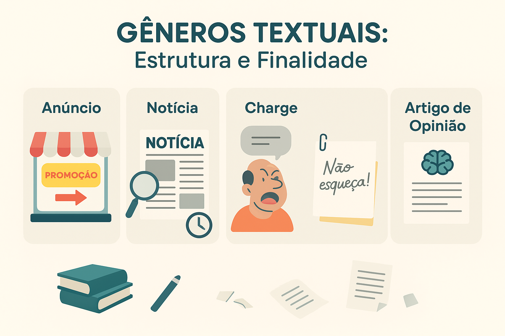

Estrutura e Finalidade dos Gêneros Textuais: anúncio, notícia, charge, bilhete e artigo de opinião
Os gêneros textuais são modelos sociocomunicativos quase estáveis que organizam a forma como interagimos na vida cotidiana. Mais do que simples formatos, eles são ferramentas culturais que se adaptam às nossas necessidades de comunicação.
Cada gênero apresenta uma estrutura composicional (como o texto é organizado), um estilo (quais recursos linguísticos são usados) e uma finalidade comunicativa (o objetivo social da mensagem). Reconhecer esses elementos permite ao leitor antecipar o propósito do texto, identificar marcas características e interpretar criticamente as entrelinhas — habilidades indispensáveis no ENEM, no PAES UEMA e em concursos públicos.

Cuidado para não confundir: Tipos Textuais x Gêneros Textuais
Um dos erros mais comuns em provas de linguagem é confundir a tipologia com o gênero. Entenda a diferença fundamental:
Tipos Textuais (Tipologia)
São as estruturas linguísticas limitadas e fixas de um texto (narrativo, descritivo, dissertativo, expositivo e injuntivo). Eles formam a "base" do texto.
Gêneros Textuais
São infinitos e adaptáveis ao contexto social. Eles nascem da combinação dos tipos textuais para atender a uma função prática no dia a dia (receita, bula, notícia, crônica).
Exemplo prático: Uma receita culinária é um gênero textual. Sua base predominante é o tipo textual injuntivo (pois dá ordens e instruções), mas pode conter trechos do tipo descritivo (ao detalhar a aparência do prato).
Principais gêneros textuais e suas características
Abaixo, detalhamos a estrutura e a finalidade dos gêneros textuais mais recorrentes nas esferas jornalística, publicitária, humorística e do cotidiano.
1. Anúncio Publicitário
Gênero persuasivo que circula na esfera midiática. Seu objetivo central é promover produtos, ideias, serviços ou conscientizar o público sobre campanhas (neste caso, chamado de anúncio de propaganda institucional).
- Finalidade: Persuadir, convencer, vender.
- Estrutura: Título chamativo, imagem (linguagem não verbal), corpo do texto (argumentação rápida), slogan e logomarca.
- Linguagem: Predominantemente injuntiva (verbos no imperativo como "compre", "participe", "aproveite"), uso de figuras de linguagem e apelo emocional.
2. Notícia
Gênero do universo jornalístico responsável por relatar fatos recentes, inéditos e de interesse público. Deve buscar a máxima objetividade, embora a total imparcialidade seja um mito.
- Finalidade: Informar sobre um acontecimento.
- Estrutura: Manchete (título principal), título auxiliar, Lide ou Lead (1º parágrafo respondendo: Quem? O quê? Quando? Onde? Como? Por quê?) e o corpo da notícia.
- Linguagem: Clara, direta, na 3ª pessoa, priorizando a função referencial da linguagem.
3. Artigo de Opinião
Texto jornalístico-opinativo, geralmente escrito por um especialista ou pessoa convidada, que apresenta uma tese sobre um tema atual e polêmico da sociedade.
- Finalidade: Defender um ponto de vista e convencer o leitor.
- Estrutura: Introdução (apresentação do tema e da tese), desenvolvimento (argumentação, dados, exemplos) e conclusão (fechamento ou proposta de intervenção).
- Linguagem: Dissertativo-argumentativa, padrão formal, frequentemente em 1ª pessoa (singular ou plural) para marcar o posicionamento do autor.
4. Charge
Gênero verbo-visual humorístico e crítico que circula em jornais, revistas e redes sociais. Seu nome vem do francês charger (exagerar, atacar).
- Finalidade: Provocar reflexão por meio do humor e da sátira sobre fatos políticos e sociais recentes.
- Estrutura: Desenho caricatural, geralmente acompanhado de falas curtas (balões) ou legendas.
- Linguagem: Altamente dependente do contexto histórico imediato. Usa ironia, duplo sentido e quebra de expectativa.
5. Bilhete
Gênero do cotidiano, inserido na esfera interpessoal. É um dos textos mais simples que usamos em nosso dia a dia para comunicação rápida.
- Finalidade: Transmitir um recado, aviso, pedido ou agradecimento rápido.
- Estrutura: Vocativo (nome do destinatário), mensagem curta, despedida e assinatura do remetente, geralmente com data.
- Linguagem: Informal, coloquial e afetiva.
Atenção para as provas (ENEM e PAES UEMA): As questões de interpretação raramente pedirão para você apenas "dar o nome" do gênero. Elas vão exigir que você identifique qual é o propósito comunicativo do autor ao escolher aquele gênero (ex: "Ao utilizar uma charge, o autor pretende..."). Além disso, o fenômeno do hibridismo de gêneros (quando um poema tem formato de receita, por exemplo) despenca no ENEM!
Quiz — Estrutura e Finalidade dos Gêneros Textuais
Questão 1 — Leia o trecho abaixo:
"Promoção imperdível! Somente hoje: leve 2 e pague 1. O smartphone que você sempre sonhou agora cabe no seu bolso. Aproveite!"
A finalidade principal e o gênero textual predominante são, respectivamente:
Questão 2 — Leia a manchete:
"Rio de Janeiro registra madrugada mais fria do ano, aponta instituto meteorológico."
Considerando o suporte (portal de internet ou jornal impresso), esse texto pertence ao gênero:
Questão 3 — Analise a situação comunicativa:
"João,
Não esqueça de levar os documentos originais para a reunião das 15h. Deixei a pasta na mesa.
Abraço,
— Ana (02/05)"
Este texto caracteriza-se por sua brevidade e linguagem informal. Trata-se do gênero:
Questão 4 — Sobre o gênero textual Charge, é correto afirmar que:
Questão 5 — Leia o fragmento:
"É inegável que os smartphones mudaram a forma como interagimos. Contudo, é fundamental que a sociedade repense o uso excessivo dessas telas, sob pena de criarmos uma geração com graves déficits de atenção e empatia."
Pela presença marcante de uma tese e defesa de um ponto de vista, este trecho é típico de um(a):
Questão 6 — A estrutura básica "Manchete, Título Auxiliar e Lide (Lead)" pertence prioritariamente a qual gênero?
Questão 7 — No gênero textual "Receita Culinária", predomina qual tipo textual?
Questão 8 — O editorial e o artigo de opinião possuem semelhanças, mas diferem principalmente porque:
Questão 9 — O uso de verbos no modo imperativo (compre, use, veja, faça) é uma marca linguística clássica do gênero:
Questão 10 — Quando um texto utiliza a estrutura visual de uma bula de remédio, mas o seu conteúdo traz recomendações amorosas com tom cômico, ocorre um fenômeno literário/textual frequentemente explorado no ENEM conhecido como:
Resumo: Estrutura dos Gêneros Textuais
- Gêneros x Tipos: Tipos são estruturas fixas (narrar, descrever, argumentar, etc.). Gêneros são textos flexíveis de uso prático (notícia, receita, charge, etc.).
- Intenção: Todo gênero nasce de uma necessidade social, por isso a "finalidade comunicativa" é o coração do gênero.
- Persuasão: O anúncio publicitário usa imagem, slogan e verbos no imperativo para convencer. O artigo de opinião usa a dissertação para defender uma tese.
- Informação: A notícia deve responder o mais rápido possível (no Lide) o que aconteceu, com quem, onde, como e por quê.
- Humor e Crítica: A charge une o visual ao verbal para satirizar uma situação atual, exigindo alto conhecimento de mundo do leitor.
Perguntas frequentes sobre Gêneros Textuais
Quantos gêneros textuais existem?
Os gêneros textuais são infinitos, pois evoluem junto com a sociedade. Novas tecnologias criam novos gêneros constantemente (como o e-mail, o tweet, os stories, memes e threads). Já os tipos textuais são limitados a cerca de seis.
Qual a diferença entre Charge e Cartum?
A charge faz uma crítica baseada em um fato ou personagem político muito específico e atual (se você ver daqui a 10 anos, pode não entender o contexto). O cartum aborda situações universais e atemporais do comportamento humano (entendido em qualquer época e lugar).
O que é domínio discursivo ou esfera de circulação?
É o ambiente social onde o texto acontece. Por exemplo, a esfera jurídica abriga gêneros como a petição e a sentença; a esfera jornalística abriga a notícia e a reportagem; a esfera literária abriga o romance e o poema.
Continue estudando Produção Textual
- Texto Descritivo: O que é, Características, Tipos e Exemplos
- Texto Informativo: O que é, Características, Estrutura e Exemplos
- Carta: O que é, Tipos, Estrutura e Dicas para Redação
- Como Fazer um Artigo de Opinião: estrutura, exemplos e passo a passo
- Gêneros discursivos: conceito, tipos e exemplos
- Produção Textual e Redação — página 1
- Produção Textual e Redação — página 2
Referências bibliográficas
- BAKHTIN, Mikhail. Estética da criação verbal. São Paulo: Martins Fontes, 2011.
- MARCUSCHI, Luiz Antônio. Produção textual, análise de gêneros e compreensão. São Paulo: Parábola Editorial, 2008.
- KOCH, Ingedore V.; ELIAS, Vanda M. Ler e compreender: os sentidos do texto. São Paulo: Contexto, 2006.
Explore Outros Conteúdos
Continue seus estudos acessando outras seções do site Mestre Kira: